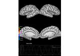

mne.Label#
- class mne.Label(vertices=(), pos=None, values=None, hemi=None, comment='', name=None, filename=None, subject=None, color=None, *, verbose=None)[source]#
A FreeSurfer/MNE label with vertices restricted to one hemisphere.
Labels can be combined with the
+operator:Duplicate vertices are removed.
If duplicate vertices have conflicting position values, an error is raised.
Values of duplicate vertices are summed.
- Parameters:
- vertices
array, shape (N,) Vertex indices (0 based).
- pos
array, shape (N, 3) |None Locations in meters. If None, then zeros are used.
- values
array, shape (N,) |None Values at the vertices. If None, then ones are used.
- hemilh | rh
Hemisphere to which the label applies.
- comment
str Kept as information but not used by the object itself.
- name
str Kept as information but not used by the object itself.
- filename
str Kept as information but not used by the object itself.
- subject
str|None Subject which this label belongs to. Should only be specified if it is not specified in the label.
- color
None| matplotlib color Default label color and alpha (e.g.,
(1., 0., 0., 1.)for red).- verbose
bool|str|int|None Control verbosity of the logging output. If
None, use the default verbosity level. See the logging documentation andmne.verbose()for details. Should only be passed as a keyword argument.
- vertices
- Attributes:
- color
None|tuple Default label color, represented as RGBA tuple with values between 0 and 1.
- comment
str Comment from the first line of the label file.
- hemilh | rh
Hemisphere.
- name
None|str A name for the label. It is OK to change that attribute manually.
- pos
array, shape (N, 3) Locations in meters.
- subject
str|None The label subject. It is best practice to set this to the proper value on initialization, but it can also be set manually.
- values
array, shape (N,) Values at the vertices.
- vertices
array, shape (N,) Vertex indices (0 based)
- color
Methods
__add__(other)Add Labels.
__len__()Return the number of vertices.
__sub__(other)Subtract Labels.
center_of_mass([subject,restrict_vertices,...])Compute the center of mass of the label.
compute_area([subject,subjects_dir,...])Compute the surface area of a label.
copy()Copy the label instance.
distances_to_outside([subject,...])Compute the distance from each vertex to outside the label.
fill(src[,name])Fill the surface between sources for a source space label.
get_tris(tris[,vertices])Get the source space's triangles inside the label.
get_vertices_used([vertices])Get the source space's vertices inside the label.
morph([subject_from,subject_to,smooth,...])Morph the label.
restrict(src[,name])Restrict a label to a source space.
save(filename)Write to disk as FreeSurfer *.label file.
smooth([subject,smooth,grade,...])Smooth the label.
split([parts,subject,subjects_dir,freesurfer])Split the Label into two or more parts.
- center_of_mass(subject=None, restrict_vertices=False, subjects_dir=None, surf='sphere')[source]#
Compute the center of mass of the label.
This function computes the spatial center of mass on the surface as in [1].
- Parameters:
- subject
str|None Subject which this label belongs to. Should only be specified if it is not specified in the label.
- restrict_vertices
bool|arrayofint| instance ofSourceSpaces If True, returned vertex will be one from the label. Otherwise, it could be any vertex from surf. If an array of int, the returned vertex will come from that array. If instance of SourceSpaces (as of 0.13), the returned vertex will be from the given source space. For most accuruate estimates, do not restrict vertices.
- subjects_dirpath-like |
None The path to the directory containing the FreeSurfer subjects reconstructions. If
None, defaults to theSUBJECTS_DIRenvironment variable.- surf
str The surface to use for Euclidean distance center of mass finding. The default here is sphere, which finds the center of mass on the spherical surface to help avoid potential issues with cortical folding.
- subject
- Returns:
- vertex
int Vertex of the spatial center of mass for the inferred hemisphere, with each vertex weighted by its label value.
- vertex
Notes
New in version 0.13.
References
- compute_area(subject=None, subjects_dir=None, surface='white', *, verbose=None)[source]#
Compute the surface area of a label.
- Parameters:
- subject
str|None Subject which this label belongs to. Should only be specified if it is not specified in the label.
- subjects_dirpath-like |
None The path to the directory containing the FreeSurfer subjects reconstructions. If
None, defaults to theSUBJECTS_DIRenvironment variable.- surface
str The surface along which to do the computations, defaults to
'white'(the gray-white matter boundary).- verbose
bool|str|int|None Control verbosity of the logging output. If
None, use the default verbosity level. See the logging documentation andmne.verbose()for details. Should only be passed as a keyword argument.
- subject
- Returns:
- area
float The area (in m) of the label.
- area
Notes
..versionadded:: 0.24
Examples using
compute_area:Corrupt known signal with point spread
Corrupt known signal with point spread
- distances_to_outside(subject=None, subjects_dir=None, surface='white', *, verbose=None)[source]#
Compute the distance from each vertex to outside the label.
- Parameters:
- subject
str|None Subject which this label belongs to. Should only be specified if it is not specified in the label.
- subjects_dirpath-like |
None The path to the directory containing the FreeSurfer subjects reconstructions. If
None, defaults to theSUBJECTS_DIRenvironment variable.- surface
str The surface along which to do the computations, defaults to
'white'(the gray-white matter boundary).- verbose
bool|str|int|None Control verbosity of the logging output. If
None, use the default verbosity level. See the logging documentation andmne.verbose()for details. Should only be passed as a keyword argument.
- subject
- Returns:
Notes
Distances are computed along the cortical surface.
New in version 0.24.
Examples using
distances_to_outside:Corrupt known signal with point spread
Corrupt known signal with point spread
- fill(src, name=None)[source]#
Fill the surface between sources for a source space label.
- Parameters:
- src
SourceSpaces Source space in which the label was defined. If a source space is provided, the label is expanded to fill in surface vertices that lie between the vertices included in the source space. For the added vertices,
posis filled in with positions from the source space, andvaluesis filled in from the closest source space vertex.- name
None|str Name for the new Label (default is self.name).
- src
- Returns:
- label
Label The label covering the same vertices in source space but also including intermediate surface vertices.
- label
See also
- get_tris(tris, vertices=None)[source]#
Get the source spaces triangles inside the label.
- Parameters:
- Returns:
- morph(subject_from=None, subject_to=None, smooth=5, grade=None, subjects_dir=None, n_jobs=None, verbose=None)[source]#
Morph the label.
Useful for transforming a label from one subject to another.
- Parameters:
- subject_from
str|None The name of the subject of the current label. If None, the initial subject will be taken from self.subject.
- subject_to
str The name of the subject to morph the label to. This will be put in label.subject of the output label file.
- smooth
int Number of iterations for the smoothing of the surface data. Cannot be None here since not all vertices are used.
- grade
int,listof shape (2,),array, orNone Resolution of the icosahedral mesh (typically 5). If None, all vertices will be used (potentially filling the surface). If a list, values will be morphed to the set of vertices specified in grade[0] and grade[1], assuming that these are vertices for the left and right hemispheres. Note that specifying the vertices (e.g.,
grade=[np.arange(10242), np.arange(10242)]for fsaverage on a standard grade 5 source space) can be substantially faster than computing vertex locations. If one array is used, it is assumed that all vertices belong to the hemisphere of the label. To create a label filling the surface, use None.- subjects_dirpath-like |
None The path to the directory containing the FreeSurfer subjects reconstructions. If
None, defaults to theSUBJECTS_DIRenvironment variable.- n_jobs
int|None The number of jobs to run in parallel. If
-1, it is set to the number of CPU cores. Requires thejoblibpackage.None(default) is a marker for unset that will be interpreted asn_jobs=1(sequential execution) unless the call is performed under ajoblib.parallel_backend()context manager that sets another value forn_jobs.- verbose
bool|str|int|None Control verbosity of the logging output. If
None, use the default verbosity level. See the logging documentation andmne.verbose()for details. Should only be passed as a keyword argument.
- subject_from
- Returns:
- labelinstance of
Label The morphed label.
- labelinstance of
See also
mne.morph_labelsMorph a set of labels.
Notes
This function will set label.pos to be all zeros. If the positions on the new surface are required, consider using
mne.read_surfacewithlabel.vertices.
- restrict(src, name=None)[source]#
Restrict a label to a source space.
- Parameters:
- srcinstance of
SourceSpaces The source spaces to use to restrict the label.
- name
None|str Name for the new Label (default is self.name).
- srcinstance of
- Returns:
- labelinstance of
Label The Label restricted to the set of source space vertices.
- labelinstance of
See also
Notes
New in version 0.20.
- save(filename)[source]#
Write to disk as FreeSurfer *.label file.
- Parameters:
- filename
str Path to label file to produce.
- filename
Notes
Note that due to file specification limitations, the Labels subject and color attributes are not saved to disk.
- smooth(subject=None, smooth=2, grade=None, subjects_dir=None, n_jobs=None, verbose=None)[source]#
Smooth the label.
Useful for filling in labels made in a decimated source space for display.
- Parameters:
- subject
str|None Subject which this label belongs to. Should only be specified if it is not specified in the label.
- smooth
int Number of iterations for the smoothing of the surface data. Cannot be None here since not all vertices are used. For a grade of 5 (e.g., fsaverage), a smoothing of 2 will fill a label.
- grade
int,listof shape (2,),array, orNone Resolution of the icosahedral mesh (typically 5). If None, all vertices will be used (potentially filling the surface). If a list, values will be morphed to the set of vertices specified in grade[0] and grade[1], assuming that these are vertices for the left and right hemispheres. Note that specifying the vertices (e.g., grade=[np.arange(10242), np.arange(10242)] for fsaverage on a standard grade 5 source space) can be substantially faster than computing vertex locations. If one array is used, it is assumed that all vertices belong to the hemisphere of the label. To create a label filling the surface, use None.
- subjects_dirpath-like |
None The path to the directory containing the FreeSurfer subjects reconstructions. If
None, defaults to theSUBJECTS_DIRenvironment variable.- n_jobs
int|None The number of jobs to run in parallel. If
-1, it is set to the number of CPU cores. Requires thejoblibpackage.None(default) is a marker for unset that will be interpreted asn_jobs=1(sequential execution) unless the call is performed under ajoblib.parallel_backend()context manager that sets another value forn_jobs.- verbose
bool|str|int|None Control verbosity of the logging output. If
None, use the default verbosity level. See the logging documentation andmne.verbose()for details. Should only be passed as a keyword argument.
- subject
- Returns:
- labelinstance of
Label The smoothed label.
- labelinstance of
Notes
This function will set label.pos to be all zeros. If the positions on the new surface are required, consider using mne.read_surface with
label.vertices.
- split(parts=2, subject=None, subjects_dir=None, freesurfer=False)[source]#
Split the Label into two or more parts.
- Parameters:
- parts
int>= 2 |tupleofstr|str Number of labels to create (default is 2), or tuple of strings specifying label names for new labels (from posterior to anterior), or contiguous to split the label into connected components. If a number or contiguous is specified, names of the new labels will be the input labels name with div1, div2 etc. appended.
- subject
str|None Subject which this label belongs to. Should only be specified if it is not specified in the label.
- subjects_dirpath-like |
None The path to the directory containing the FreeSurfer subjects reconstructions. If
None, defaults to theSUBJECTS_DIRenvironment variable.- freesurfer
bool By default (
False)split_labeluses an algorithm that is slightly optimized for performance and numerical precision. SetfreesurfertoTruein order to replicate label splits from FreeSurfersmris_divide_parcellation.
- parts
- Returns:
Notes
If using contiguous split, you must ensure that the label being split uses the same triangular resolution as the surface mesh files in
subjects_dirAlso, some small fringe labels may be returned that are close (but not connected) to the large components.The spatial split finds the labels principal eigen-axis on the spherical surface, projects all label vertex coordinates onto this axis, and divides them at regular spatial intervals.
Examples using mne.Label#
Corrupt known signal with point spread
Compare simulated and estimated source activity


Cortical Signal Suppression (CSS) for removal of cortical signals


Compute Power Spectral Density of inverse solution from single epochs
Compute power and phase lock in label of the source space

Compute source power spectral density (PSD) in a label

Compute MNE-dSPM inverse solution on single epochs


Extracting time course from source_estimate object


Extracting the time series of activations in a label